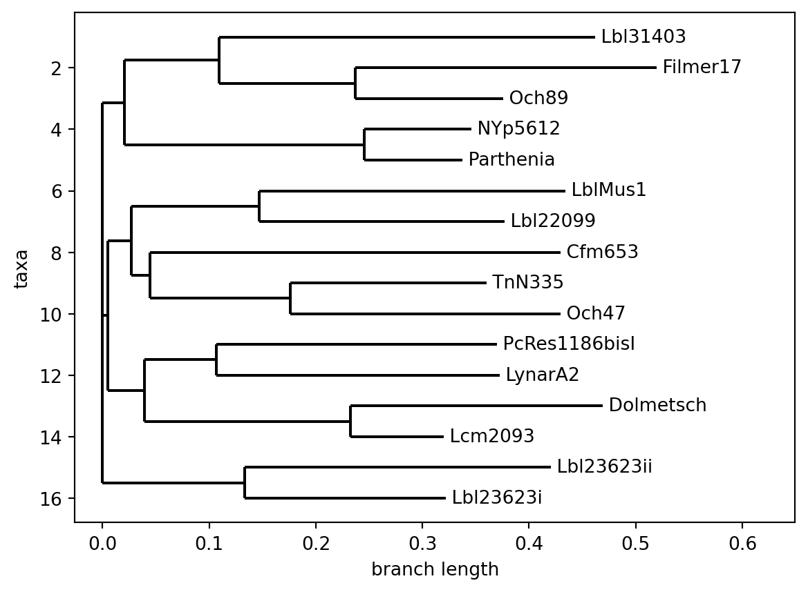

from Bio import SeqIO, AlignIO, Phylo
from Bio.Phylo.TreeConstruction import DistanceCalculator, DistanceTreeConstructor
import matplotlib
import matplotlib.pyplot as plt14 Modeling document traditions
Here, we show how one can use cultural evolution methods to model the histories of manuscripts. This is based on a phylogenetic analysis of a Prelude by Orlando Gibbons (Windram et al., 2014).
14.1 Context
Mutations create new traditions [TODO]
14.2 Data and coding
We use the same data as in (Windram et al., 2014)1
This is a case of a qualitative encoding, because the features were manually chosen and encoded according to the expert’s opinion.
In the context of this chapter, we will rely on implementations of several algorithms in the BioPython library. We also implot matplotlib for visualization.
The data codings are stored in the file gibbons_prelude.nex in the NEXUS format. First, let’s have a look at the file’s contents:
file = "data/gibbons_prelude.nex"
with open(file) as f:
for line in f.readlines():
line = line.rstrip("\n") # remove trailing line breaks
print(line[:65])#NEXUS
[! 01-Nov-2013 - with taxanames 07-Feb-2023]
BEGIN taxa;
DIMENSIONS NTAX=16;
TAXLABELS
[1] Parthenia
[2] Lcm2093
[3] Och47
[4] Och89
[5] Lbl31403
[6] NYp5612
[7] Cfm653
[8] Lbl22099
[9] LynarA2
[10] Lbl23623i
[11] Lbl23623ii
[12] PcRes1186bisI
[13] LblMus1
[14] TnN335
[15] Dolmetsch
[16] Filmer17
;
END;
BEGIN characters;
dimensions nchar=610;
format
datatype=standard
missing=?
respectcase SYMBOLS="0123456789abcdefghijklmnopqrstuvwxyz";
matrix
Parthenia 000000000000000000000000000000000000000?000000000
Lcm2093 110010100000000000000000000000000001000?000000011
Och47 00002110110011110110111?1010100010010010000000012
Och89 000031102001000000000000000020000011112?100000010
Lbl31403 220010?10000200000010000010120000002022?100000013
NYp5612 33000020110000000000000000000000001?000?0000000?0
Cfm653 22110011110011110210121111?031?01001022?00100??11
Lbl22099 401000113?11111102101211111041011001022?11?100013
LynarA2 000000211100000000000000000000000013000?000000023
Lbl23623i 540001?000101121100000000000000001100?2?001110001
Lbl23623ii 640001?01110111100000000000000000011002?001110011
PcRes1186bisI 200000110000112113000300000020000001022?100000011
LblMus1 2100001000011111011014001010500010010010000000011
TnN335 750100111100111104101511111031001001002?001000013
Dolmetsch 811000100001111100000000021061000001002?001000011
Filmer17 2110001000002000000000000000200000010011000000011
;
END;
The file’s structure is very clear. In the header, it declares its format (#NEXUS) along with some metadata, and then lists the 16 ‘taxa’ (the original Parthenia and its different copies). It further describes the encoding scheme, namely which SYMBOLS can be used (integers from 0-9 as well as lowercase roman letters), and that the ? symbol will be used for missing data. We also can see that the dimensionality is nchar=610, meaning that the encoding emcompasses 610 different features.
Let’s read in the file using BioPython’s built-in parser and print the names of all manuscripts:
for manuscript in SeqIO.parse(file, format="nexus"):
print(manuscript.name) Parthenia
Lcm2093
Och47
Och89
Lbl31403
NYp5612
Cfm653
Lbl22099
LynarA2
Lbl23623i
Lbl23623ii
PcRes1186bisI
LblMus1
TnN335
Dolmetsch
Filmer1714.3 Sequence alignment
Each manuscript containing Gibbon’s Prelude is encoded as a string of characters (see above). In order to find deviations, mutations, and errors in the sequences, we will find best alignments of the manuscript encodings using BioPython. While the alignments here rely purely on visual and philological features of the text, this methodology has also been successfully applied to melodic variations (Savage et al., 2022).
alignments = next(AlignIO.parse(file, format="nexus"))
print(alignments[:3])Alignment with 3 rows and 610 columns
[{'t': 'std', 'd': ['0']}, {'t': 'std', 'd': ['0']}, {'t': 'std', 'd': ['0']}, {'t': 'std', 'd': ['0']}, {'t': 'std', 'd': ['0']}, {'t': 'std', 'd': ['0']}, {'t': 'std', 'd': ['0']}, {'t': 'std', 'd': ['0']}, {'t': 'std', 'd': ['0']}, {'t': 'std', 'd': ['0']}, {'t': 'std', 'd': ['0']}, {'t': 'std', 'd': ['0']}, {'t': 'std', 'd': ['0']}, {'t': 'std', 'd': ['0']}, {'t': 'std', 'd': ['0']}, {'t': 'std', 'd': ['0']}, {'t': 'std', 'd': ['0']}, {'t': 'std', 'd': ['0']}, {'t': 'std', 'd': ['0']}, {'t': 'std', 'd': ['0']}, {'t': 'std', 'd': ['0']}, {'t': 'std', 'd': ['0']}, {'t': 'std', 'd': ['0']}, {'t': 'std', 'd': ['0']}, {'t': 'std', 'd': ['0']}, {'t': 'std', 'd': ['0']}, {'t': 'std', 'd': ['0']}, {'t': 'std', 'd': ['0']}, {'t': 'std', 'd': ['0']}, {'t': 'std', 'd': ['0']}, {'t': 'std', 'd': ['0']}, {'t': 'std', 'd': ['0']}, {'t': 'std', 'd': ['0']}, {'t': 'std', 'd': ['0']}, {'t': 'std', 'd': ['0']}, {'t': 'std', 'd': ['0']}, {'t': 'std', 'd': ['0']}, {'t': 'std', 'd': ['0']}, {'t': 'std', 'd': ['0']}, {'t': 'std', 'd': ['?']}, {'t': 'std', 'd': ['0']}, {'t': 'std', 'd': ['0']}, {'t': 'std', 'd': ['0']}, {'t': 'std', 'd': ['0']}]...[{'t': 'std', 'd': ['0']}, {'t': 'std', 'd': ['0']}, {'t': 'std', 'd': ['0']}] Parthenia
[{'t': 'std', 'd': ['1']}, {'t': 'std', 'd': ['1']}, {'t': 'std', 'd': ['0']}, {'t': 'std', 'd': ['0']}, {'t': 'std', 'd': ['1']}, {'t': 'std', 'd': ['0']}, {'t': 'std', 'd': ['1']}, {'t': 'std', 'd': ['0']}, {'t': 'std', 'd': ['0']}, {'t': 'std', 'd': ['0']}, {'t': 'std', 'd': ['0']}, {'t': 'std', 'd': ['0']}, {'t': 'std', 'd': ['0']}, {'t': 'std', 'd': ['0']}, {'t': 'std', 'd': ['0']}, {'t': 'std', 'd': ['0']}, {'t': 'std', 'd': ['0']}, {'t': 'std', 'd': ['0']}, {'t': 'std', 'd': ['0']}, {'t': 'std', 'd': ['0']}, {'t': 'std', 'd': ['0']}, {'t': 'std', 'd': ['0']}, {'t': 'std', 'd': ['0']}, {'t': 'std', 'd': ['0']}, {'t': 'std', 'd': ['0']}, {'t': 'std', 'd': ['0']}, {'t': 'std', 'd': ['0']}, {'t': 'std', 'd': ['0']}, {'t': 'std', 'd': ['0']}, {'t': 'std', 'd': ['0']}, {'t': 'std', 'd': ['0']}, {'t': 'std', 'd': ['0']}, {'t': 'std', 'd': ['0']}, {'t': 'std', 'd': ['0']}, {'t': 'std', 'd': ['0']}, {'t': 'std', 'd': ['1']}, {'t': 'std', 'd': ['0']}, {'t': 'std', 'd': ['0']}, {'t': 'std', 'd': ['0']}, {'t': 'std', 'd': ['?']}, {'t': 'std', 'd': ['0']}, {'t': 'std', 'd': ['0']}, {'t': 'std', 'd': ['0']}, {'t': 'std', 'd': ['0']}]...[{'t': 'std', 'd': ['0']}, {'t': 'std', 'd': ['?']}, {'t': 'std', 'd': ['1']}] Lcm2093
[{'t': 'std', 'd': ['0']}, {'t': 'std', 'd': ['0']}, {'t': 'std', 'd': ['0']}, {'t': 'std', 'd': ['0']}, {'t': 'std', 'd': ['2']}, {'t': 'std', 'd': ['1']}, {'t': 'std', 'd': ['1']}, {'t': 'std', 'd': ['0']}, {'t': 'std', 'd': ['1']}, {'t': 'std', 'd': ['1']}, {'t': 'std', 'd': ['0']}, {'t': 'std', 'd': ['0']}, {'t': 'std', 'd': ['1']}, {'t': 'std', 'd': ['1']}, {'t': 'std', 'd': ['1']}, {'t': 'std', 'd': ['1']}, {'t': 'std', 'd': ['0']}, {'t': 'std', 'd': ['1']}, {'t': 'std', 'd': ['1']}, {'t': 'std', 'd': ['0']}, {'t': 'std', 'd': ['1']}, {'t': 'std', 'd': ['1']}, {'t': 'std', 'd': ['1']}, {'t': 'std', 'd': ['?']}, {'t': 'std', 'd': ['1']}, {'t': 'std', 'd': ['0']}, {'t': 'std', 'd': ['1']}, {'t': 'std', 'd': ['0']}, {'t': 'std', 'd': ['1']}, {'t': 'std', 'd': ['0']}, {'t': 'std', 'd': ['0']}, {'t': 'std', 'd': ['0']}, {'t': 'std', 'd': ['1']}, {'t': 'std', 'd': ['0']}, {'t': 'std', 'd': ['0']}, {'t': 'std', 'd': ['1']}, {'t': 'std', 'd': ['0']}, {'t': 'std', 'd': ['0']}, {'t': 'std', 'd': ['1']}, {'t': 'std', 'd': ['0']}, {'t': 'std', 'd': ['0']}, {'t': 'std', 'd': ['0']}, {'t': 'std', 'd': ['0']}, {'t': 'std', 'd': ['0']}]...[{'t': 'std', 'd': ['0']}, {'t': 'std', 'd': ['1']}, {'t': 'std', 'd': ['1']}] Och4714.4 Constructing a possible lineage
We are now in the position to create a possible hereditance system out of these alignments because we can use these closest alignments to determine pairwise distances between the sequences.
calculator = DistanceCalculator(model="identity")
distance_matrix = calculator.get_distance(alignments)
constructor = DistanceTreeConstructor(calculator)From this constructor, we can now build a tree:
tree = constructor.build_tree(alignments)
print(tree)Tree(rooted=False)
Clade(branch_length=0, name='Inner14')
Clade(branch_length=0.020120389344262246, name='Inner12')
Clade(branch_length=0.08942964480874313, name='Inner7')
Clade(branch_length=0.3522540983606557, name='Lbl31403')
Clade(branch_length=0.12725409836065588, name='Inner2')
Clade(branch_length=0.2826292559899118, name='Filmer17')
Clade(branch_length=0.13868221941992426, name='Och89')
Clade(branch_length=0.22552937158469957, name='Inner1')
Clade(branch_length=0.10017564402810297, name='NYp5612')
Clade(branch_length=0.09162763466042156, name='Parthenia')
Clade(branch_length=0.005033299180327883, name='Inner13')
Clade(branch_length=0.021810963114754167, name='Inner11')
Clade(branch_length=0.11976178278688522, name='Inner6')
Clade(branch_length=0.287431693989071, name='LblMus1')
Clade(branch_length=0.23060109289617492, name='Lbl22099')
Clade(branch_length=0.01732838114754097, name='Inner10')
Clade(branch_length=0.3853483606557378, name='Cfm653')
Clade(branch_length=0.13186475409836057, name='Inner4')
Clade(branch_length=0.18412816691505207, name='TnN335')
Clade(branch_length=0.2535767511177348, name='Och47')
Clade(branch_length=0.03418288934426228, name='Inner9')
Clade(branch_length=0.06726434426229502, name='Inner8')
Clade(branch_length=0.2635538641686183, name='PcRes1186bisI')
Clade(branch_length=0.26595433255269324, name='LynarA2')
Clade(branch_length=0.19298155737704922, name='Inner3')
Clade(branch_length=0.23695355191256845, name='Dolmetsch')
Clade(branch_length=0.08763661202185774, name='Lcm2093')
Clade(branch_length=0.13326075819672134, name='Inner5')
Clade(branch_length=0.28704918032786886, name='Lbl23623ii')
Clade(branch_length=0.18836065573770489, name='Lbl23623i')The Phylo library provides a convenient function to plot this tree:
for clade in tree.get_nonterminals():
clade.name = ""
fig = Phylo.draw(tree)
14.5 Being confident
Use bootstrapping.
14.6 Conclusion
Briefly discuss NeighborNet graph and point to similar approach in (Windram et al., 2022).
I am grateful to Heather Windram for providing the data and to Francis Windram for helping me to parse it properly.↩︎